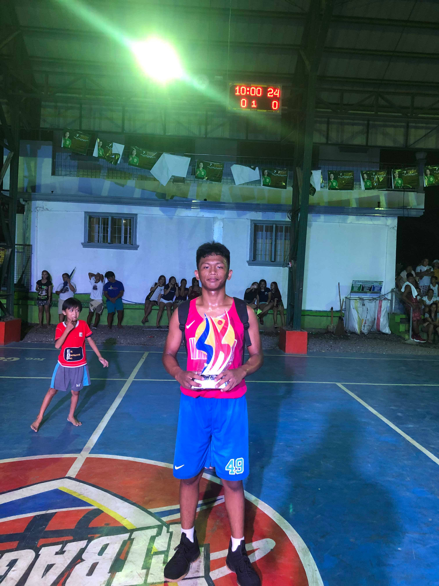
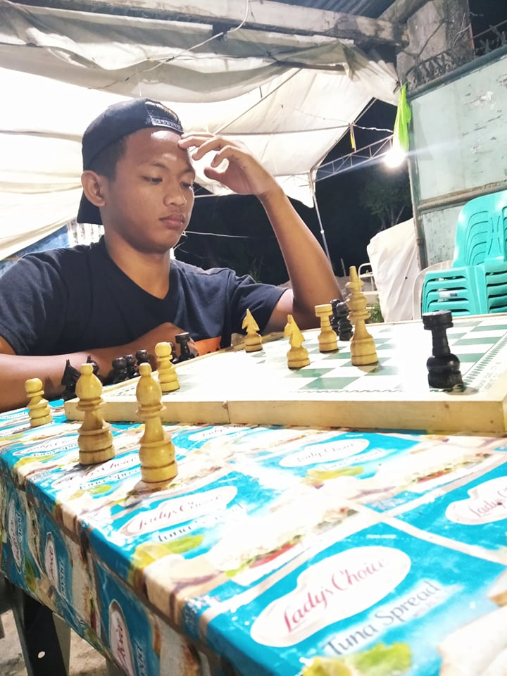
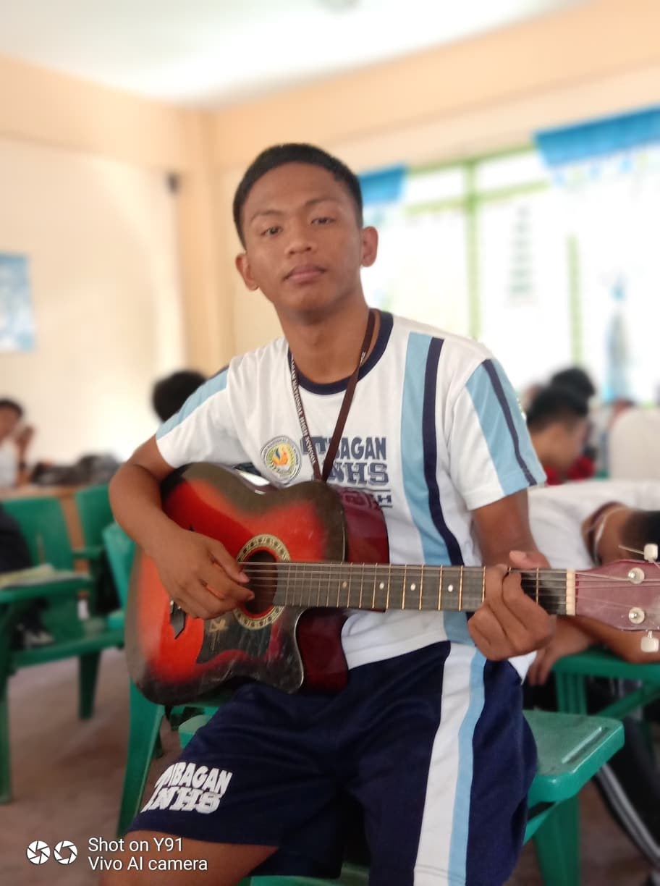

Basketball
I started playing basketball when I was in the tenth grade and I know I was embarrassed because my moves didn't match the moves of my friends, and there was even a time when they laughed at me because of my sloppy moves, but it came the time when I was defeating them and that's when I received their respect and joined the strong ones in our area, the one in the picture is my first foot in the league and first championship
Chess
I only learned my chess from my grandfather who always fought on the road, often the ones I fought with were as old as him and when I was a child I was amazed at the pieces of chess, how the correct processes are, why it moves and how it was played, and when I was in high school I was the one training the fighters of our school
Guitarist
I learned to play the guitar when I was a senior in high school and at that time I was really into something so I persevered to learn it until I was doing it every day that I didn't realize that I already knew how to play it happily
Dota 2

I first played dota1 when I was 7 because I saw it in my uncles but I stopped because my uncles scolded me saying I shouldn't learn it, and I learned it around 11 years old because I wanted to really learn it and continue until Dota 2 came out my first game it was fun because I was with my friends all night playing, and there were many opponents from other countries, but my passion stopped here when I was a brother and brother is reminded that it is forbidden to play violent games or killings